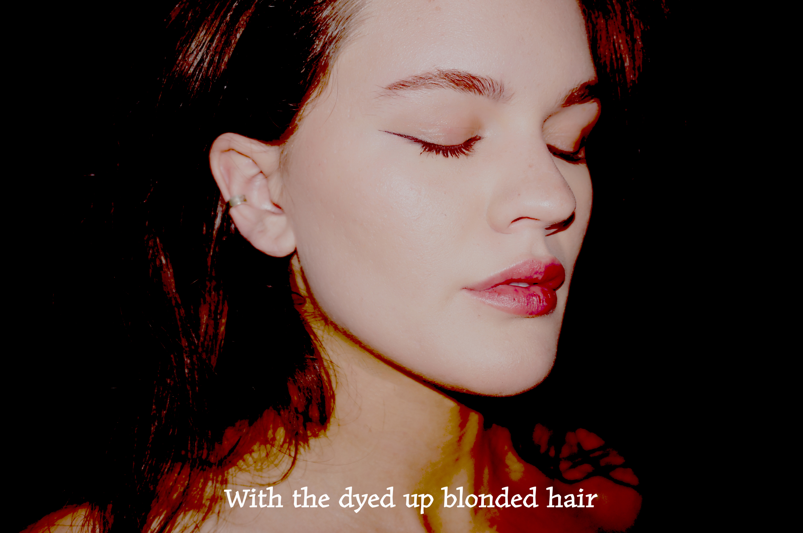
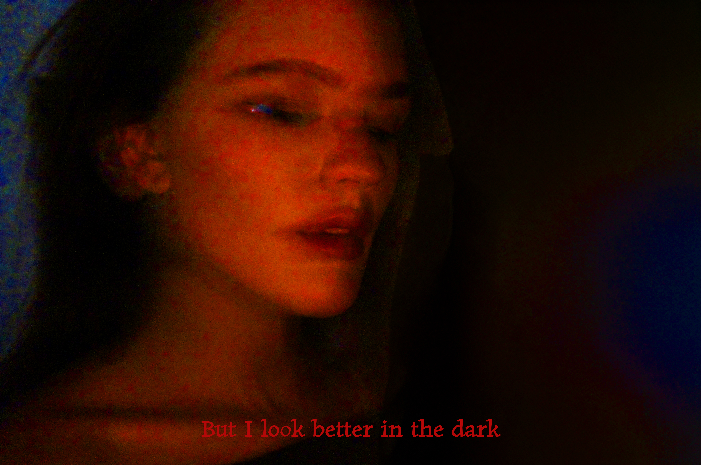

The Mark FM
- Developed marketing content, including weekly blog posts and analyzing music lyrics and genres to increase audience engagement.
- Designed social media marketing strategies across Instagram, Facebook, and X, driving audience interaction and website visibility.
- Leveraged Google Analytics to track user acquisition, maximize user engagement, adjust content strategy, and identify audience demographics.
- Applied SEO techniques to enhance content visibility, drive organic traffic, and improve search engine rankings, boosting overall site performance.
Digital Work

